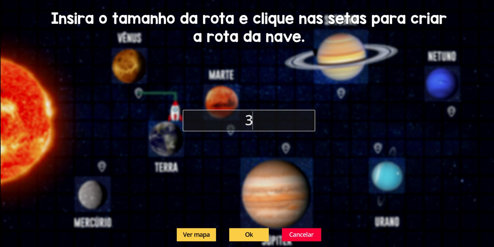
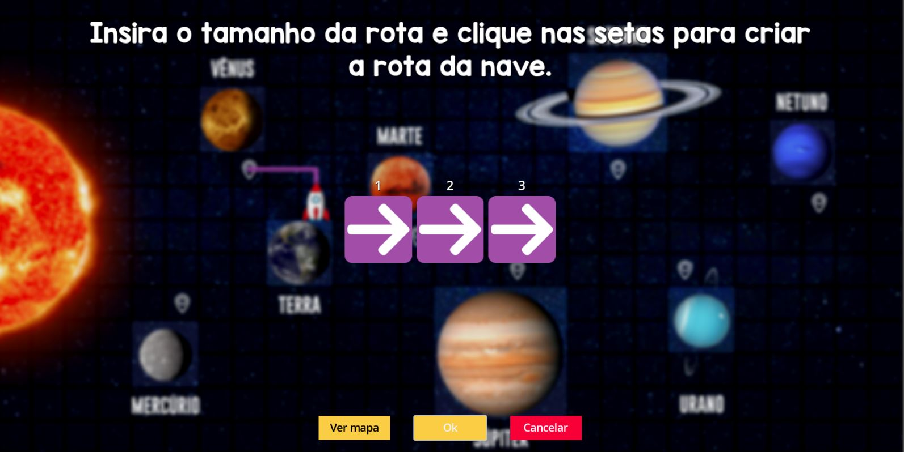

Para jogar é muito simples!
A seta vermelha na imagem indica qual o planeta destino da rodada
A seta amarela na imagem indica onde o foguete do jogador se encontra
As setas verdes indicam os pontos de parada de cada planeta do jogo
Para traçar a rota, segure com o mouse o foguete e arraste até o ponto de parada do planeta destino!
Nessa tela você deve digitar o número de passos necessários para realizar a rota.
Nessa tela você deve selecionar as setas que correspondem ao trajeto previamente desenhado! Para alterar entre as setas você deve clicar em cima delas. Você pode clicar em Ver mapa para facilitar a visualização do trajeto. Após determinar a rota, basta clicar em Ok e então o foguete irá partir! Caso o trajeto não esteja adequado, você deverá traçar a rota novamente!